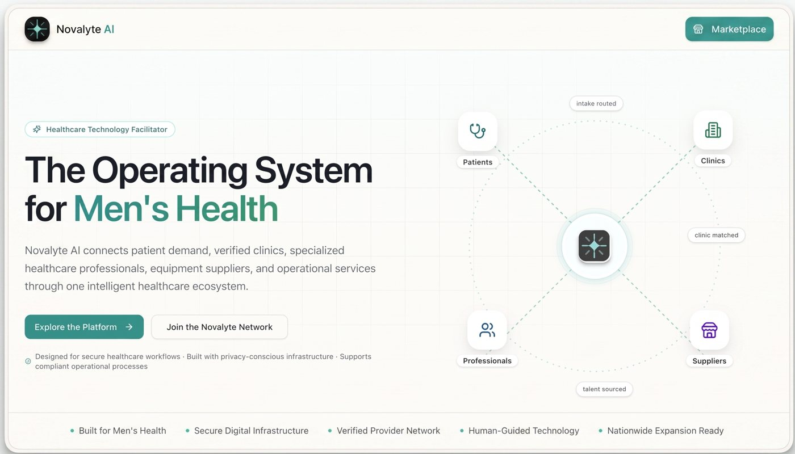

Founder · Product & Engineering
Novalyte AI: healthtech growth & discovery platform
Specialized men's-health care is fragmented. Patients struggle to find and vet clinics, and clinics spend heavily on inconsistent lead generation and run intake through disconnected tools. Novalyte connects patient discovery, AI-guided informational assessments, verified clinic matching, intake, and conversion intelligence on one platform.
- Role
- Founder. Owned product, architecture, build, and deployment.
- Built
- Public site with verified clinic directory, guided assessments, workforce and marketplace foundations; a multi-tenant clinic app; an internal operator console. All three run on one shared Supabase backend.
- Status
- Live at novalyteai.com. Founder-led clinic outreach began July 2026.
ReactTypeScriptSupabase / PostgresVercelResendLLM workflows
novalyteai.com